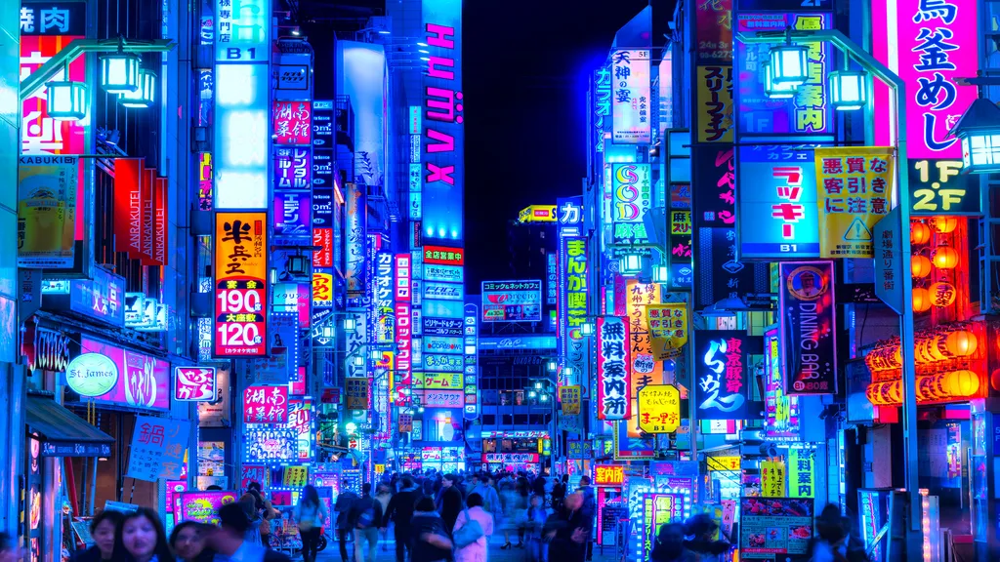
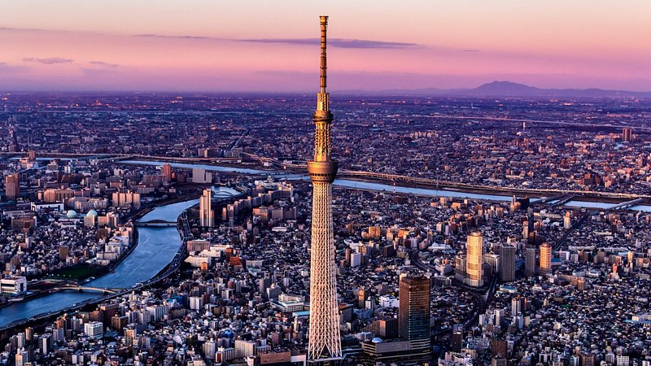
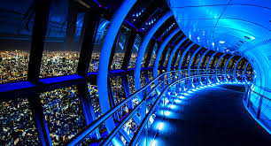
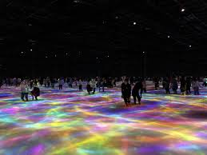
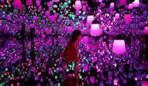
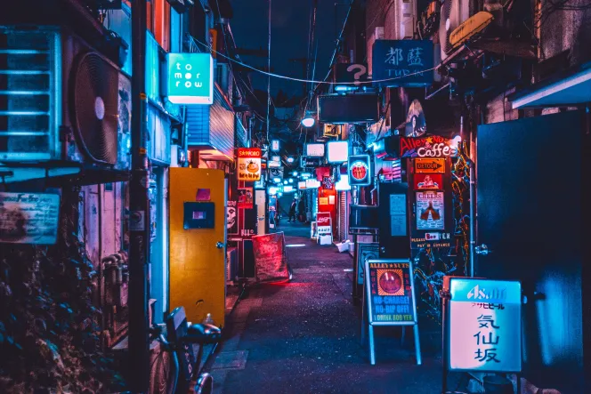
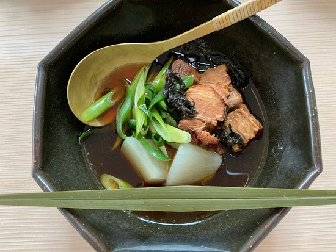
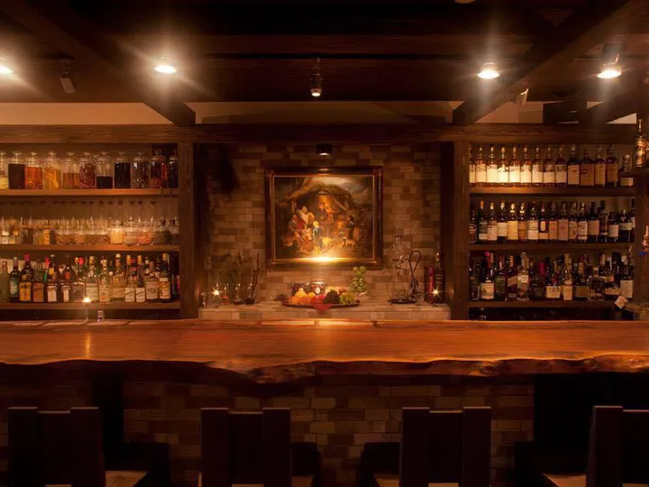
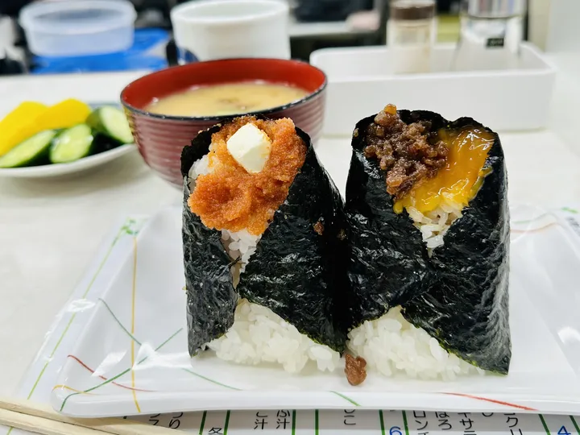

Tokyo
Tokyo is a vast and lively city made up of unique districts. Hot spots include Shibuya and Shinjuku but one can find something to do almost anywhere!

Tokyo, the megacity
- Tokyo Skytree
 
What better way to get a feel for the city than Tokyo's 621m tall skytree overseeing the entire city? Known as the watcher to some, a great place to make the cities acquintance
- Tokyo tower

Experience the dazzling nightlife of Tokyo from the iconic Tokyo Tower, where panoramic views of the city's illuminated skyline await. This vibrant landmark, inspired by the Eiffel Tower, transforms after dark with stunning light displays and a lively atmosphere, making it a must-visit for night owls.
- Teamlab Planets
 
Immerse yourself in the vibrant nightlife at teamLab Planets, a digital art museum where you become part of mesmerizing, interactive light displays. This innovative attraction transforms after dark, offering a surreal, dreamlike experience that's a must-see for night adventurers in Tokyo.
- Shinjuku golden gai

Explore the electrifying nightlife of Shinjuku Golden Gai, a maze of narrow alleys packed with over 200 unique bars and eateries. This vibrant district comes alive after dark, offering an authentic and unforgettable experience of Tokyo's nightlife scene.
Tokyo, eateries and delights
- Yakumo Saryō

For a rejuvenating start to the day indulge with a Japanese breakfast at Yakumo Saryo. Designed by architect Shinichiro Ogata, the teahouse is a tranquil space offering a morning of peace and mindfulness. The asacha (morning tea) set breakfast includes a variety of teas, porridge, fish, pickles, miso soup, and wagashi (confections) to finish. Reservations are required.
- Bar Benfiddich

Hiroyasu Kayama's atmospheric, candle-lit ninth-floor hideaway is one of Tokyo’s most compelling bars, with shelves crammed with rare spirits and jars of obscure aromatics, and drinks just as likely to involve a mortar and pestle as a cocktail shaker. Sink into one of the half-dozen armchairs at the ancient-wood counter and give Kayama carte blanche to work his mixologist magic. Best to get there early, though: Bar Benfiddichs fame extends far beyond the Shinjuku back streets.
- Onigiri Manma

Manma, an onigiri (rice ball) shop, sits in the shadow of the Shinjuku Isetan department store. Onigiri are a classic comfort food, but Manma’s draw is its unique fillings: Popular options include a “mother and child” of grilled salmon with sujiko salmon roe, seasoned ground meat with cured egg yolk, and bacon with cream cheese. The only side dishes — all that’s really needed — are miso soup and tsukemono, pickles. The casual seating is at the counter, so everyone has front-row seats to watch the staff assemble giant rice balls. Expect a queue for a seat, but you can also take to-go orders (usually faster) to the nearby Shinjuku Gyoen park for an impromptu picnic.
Clubs